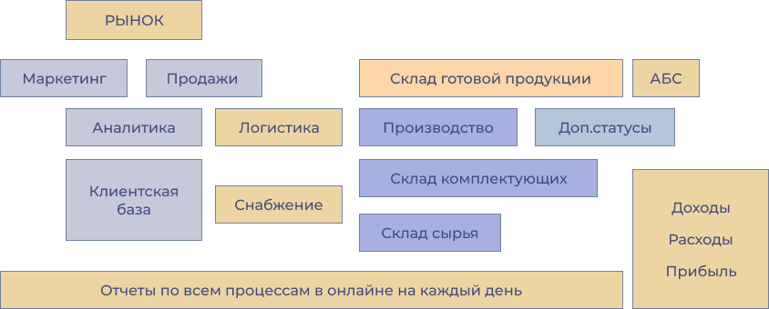

Создаем непрерывную систему бизнес-процессов

Как думаете, на
сколько раскрыт
потенциал вашего бизнеса?
По статистике средний показатель 47 процентов использовано в настройке бизнес-процессов.
Фактический опыт показывает, что изнутри собственникам и топ управленцам трудно удержать внимание на всей целостности картины бизнеса в деталях. Это нормально в современных рыночных условиях в эпоху большого информационного шума и быстрых перемен.
Хаос прячется в мышлении
1. Избыток ресурсов.
Богатое мышление - получить избыток ресурсов, а затем использовать этот излишек для ускорения процесса. Ускорить развитие обмена данными. Ускорить бизнес.
2. Импульс.
Богатое мышление предполагает тратить свое время, ресурсы и энергию на работу, которая продолжает окупаться даже после того, как затрачены усилия. Богатое мышление заключается в том, чтобы заставить маховик вращаться. Наращивание импульса. Создание систем, которые продолжают создавать ценность сами по себе.
3. Долгосрочное мышление.
Богатое мышление готово инвестировать ресурсы, казалось бы, без всякого вознаграждения сразу. Не все имеет четкий путь к прибыльности. Речь идет о риске и вознаграждении, по накопленным данным и их использовании. Один год успешных продаж, обеспечит, устойчивость компании на 10 -тилетия.
4. Нужна команда.
Богатое мышление понимает, что оно не может сделать все, и что даже если бы оно могло, оно создало бы большую ценность, сосредоточив внимание на своих основных сильных сторонах. Он знает, что правильная команда больше, чем сумма ее частей. Работа в команде – ключ к богатству. Покойный Джим Рон говорил: «Вы — среднее арифметическое пяти человек, с которыми проводите больше всего времени».
5. Жизнь с разумом.
Большая часть жизни — это наше собственное предварительное программирование. Если вы сможете честно и без предвзятости подойти к тому, где вы сейчас находитесь, вы сможете начать процесс тонкой настройки своего стабильного непрерывного успеха.
Обладающий информацией, обладает расширением границ влияния на проходящие процессы.Бизнес - это стратегия и тактика
Первое
Сформированная миссия, цели компании
Второе
Выстроенная система непрерывных действий внутри предприятия
Третье
Воздействие внешних изменений рынка, тенденций, трендов
Основатель компании ОЦИФРУМ
В проведении реинжиниринга ВАЖНО обращать внимание на каждый модуль и выстроенные с ним взаимосвязи.
Бизнес организм, это передвижение по алгоритмам в системе, информации, обмена данными, использование ресурсов, взаимодействие людей.
Бизнес организм, это передвижение по алгоритмам в системе, информации, обмена данными, использование ресурсов, взаимодействие людей.

СОВРЕМЕННЫЙ ФОРМАТ УПРАВЛЕНИЯ
Открывает собственникам и ТОП менеджерам прозрачность в процессах и перспективы улучшений- Узкие места, указывая на неправильно сформированные связки в едином целом процессе.
- Не рационально заниженную активность ресурсов.
- Протечки в финансовом потоке, и точечные решения по регулированию изменений.
- Поднимется уровень ответственности в коллективе, результат каждого сотрудника ложится в общую ценность предприятия.
- Вырабатывается дисциплина
- Контроль проходит по фактическими данными.
РАЗРАБОТАНО РЕШЕНИЕ
Целеустремлённый цифровой помощник для собственников производственных предприятий
Системный бизнес:
создаем динамичное будущее
Готовим вас к динамичному будущему. Мы следим за удивительными изменениями в мире мобильных решений и новыми достижениями в технологиях бизнеса, а также тем, как люди взаимодействуют в компаниях.
Внедрение аналитики данных — это дисциплина, которая позволяет организации извлекать значимую информацию из своих данных “в мгновение ока”. Сюда входит, сбор всей информации, фиксация действий, организация и хранение данных за все периоды, а также инструменты и методы, используемые для выполнения этих задач.
Как мы разрабатываем программы
В разработке IT продуктов, используем современные методики, метрики. Успех устойчивой системы - в связях между элементами, в достижении поставленных целей.
Функционал системы, объединяет все бизнес-процессы, что обеспечивает баланс предприятия по разным показателям. Реагирование в моменте на изменения и отклонения экономит массу времени и финансов.
Желаете обсудить возможности с нашим экспертом по цифровой трансформации?
Представьте себе интеллектуальное производство, которое действительно увеличивает производительность и эффективность бизнеса, минимизируя риски и сокращая время простоев.
ОТКРОЙТЕ НОВЫЕ ПРОЦЕССЫ